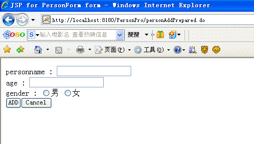
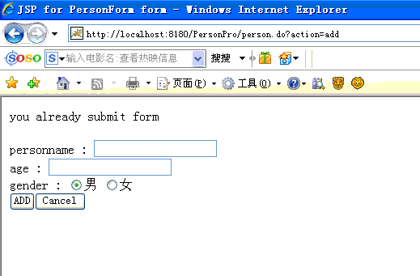

在struts1.x中防止重复提交的实现
当我们在Struts中提交表单后，可以通过会退按钮返回到原来的表单页面，进行重复性提交。这在很多情况下是不允许的。比如当注册用户的表单中，当提交成功后，回退或者按刷新按钮可以再次提交表单，这样造成数据的不一致性，因为数据已经提交。
Struts中可以利用同步令牌机制来解决重复提交表单的问题。在Struts的Action中提供了和同步令牌相关的方法
protected boolean isTokenValid(HttpServletRequest request)
此方法用来判断当前用户会话中存储的令牌值和当前请求参数的令牌值是否一致，如果不一致返回false，一致则返回true。当我们利用Action进行相应调用处理时，就是利用此方法判断令牌值是否一致来决定是否进行处理
protected void saveToken(HttpServletRequest request)
此方法创建一个新的令牌值，将其保存在当前的会话（session）范围内。如果当前的会话对象不存在，则创建会话对象
protected void resetToken(HttpServletRequest request)
此方法对当前会话范围的令牌值进行复位操作，即删除当前会话范围的令牌值
了解了以上方法后，我们就可以在我们的应用中利用这些方法防止表单的重复性提交。例如在此我们实现一个简单的数据增加操作，首先需要显示给用户一个信息录入表单，显示此录入表单页面前，需要给当前的请求分配一个同步令牌值，并存储在当前的会话范围内。并在当前的录入页面中生成一个隐藏域，令牌值作为此隐藏域的内容，当用户提交时，控制器获取隐藏域的内容，利用isValidToken方法判断此参数内容是否和会话中存储的令牌值内容匹配，如果不匹配则进行适当的错误处理
由于要在页面显示前生成此次请求的令牌值，所以通过一个额外的Action生成令牌值，并转发到录入页面，例如在此额外的Action为：PersonAddPreparedAction，此action的配置为：
<action
path="/personAddPrepared"
scope="request"
type="com.frank.action.PersonAddPreparedAction">
<forward name="personAdd" path="/personAdd.jsp" />
</action>
其中包括一个转发路径personAdd，转发到personAdd.jsp(实际的信息录入页面）。在此Action中生成令牌值，转发到录入页面：
public ActionForward execute(ActionMapping mapping, ActionForm form,
HttpServletRequest request, HttpServletResponse response) {
this.saveToken(request);
return mapping.findForward("personAdd");
}
完成了此次操作后，生成了令牌值，并存储在了当前的会话中，转发到personAdd.jsp，开始信息的录入提交。
personAdd.jsp页面非常的简单
<html:errors/>
<html:form action="/person.do?action=add">
personname : <html:text property="personname" value=""/><html:errors property="personname"/><br/>
age : <html:text property="age" value=""/><html:errors property="age"/><br/>
gender : <html:radio property="gender" value="M"/>男
<html:radio property="gender" value="F"/>女
<html:errors property="gender"/><br/>
<html:submit value="ADD"/><html:cancel/>
</html:form>
提交后请求personAction，进行实际的业务操作
PersonAction中的add契约方法完成数据的增加（在此PersonAction继承了DispatchAction），PersonAction的配置如下：
<action
attribute="personForm"
input="/personAdd.jsp"
name="personForm"
parameter="action"
path="/person"
scope="request"
type="com.frank.action.PersonAction">
<forward name="addFail" path="/personAdd.jsp" />
<forward name="addSuccess" path="/personList.jsp" />
</action>
PersonAction的add方法代码如下：
public ActionForward add(ActionMapping mapping, ActionForm form,
HttpServletRequest request, HttpServletResponse response) {
PersonForm personForm = (PersonForm) form;// TODO Auto-generated method stub
String personname=personForm.getPersonname();
int age=personForm.getAge();
String gender=personForm.getGender();
PersonRule personRule=new PersonRule();
ActionMessages errors=new ActionMessages();
if(!this.isTokenValid(request)){
this.saveToken(request);
errors.add(ActionMessages.GLOBAL_MESSAGE,new ActionMessage("register.error"));
this.saveErrors(request, errors);
return mapping.findForward("addFail");
}else{
this.resetToken(request);
if(personRule.addPerson(personname, age, gender)){
return mapping.findForward("addSuccess");
}else{
return mapping.getInputForward();
}
}
}
此方法首先获取ActionForm的数据内容，然后判断令牌值是否匹配（判断会话中的令牌值和请求参数中的令牌值）。如果不匹配则重新生成令牌值，并记录错误信息，转发到addFail（即信息录入页面重新录入）。如果匹配则删除当前会话中的令牌值（这样，当点回退或者刷新按钮重复提交时，因为此时令牌值已经被删除，显然不匹配，则不进行实际的业务操作，即防止了重复提交），完成实际的业务操作。
在属性文件中加入register.error属性，用于保存错误信息
register.error=you already submit form
测试：

http://1812.img.pp.sohu.com.cn/images/blog/2008/6/26/0/18/11b65e141a9.jpg
从PersonAddPreparedAction控制器转发到注册页面，此时生成了令牌值保存到当前的会话中，查看此页面的源代码，会发现自动生成了隐藏域，同时记录了令牌值，当提交时，此隐藏域的令牌值也会提交，以后即可和存储在当前会话中的令牌值进行比较了
<input type="hidden" name="org.apache.struts.taglib.html.TOKEN" value="893ffef11148c6569a3c10f2309a0e21">
首次提交时，没有任何的问题，但是点刷新重复提交或者回退到原来页面进行重复提交时，不会提交成功，而是转发到注册页面，提示错误

http://1822.img.pp.sohu.com.cn/images/blog/2008/6/26/0/22/11b65f08c5f.jpg